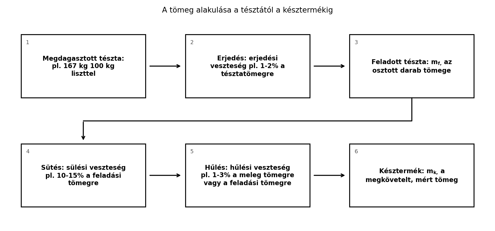

Egy pékségben a hétvégi megrendelésre 500 g-os kenyereket kell készíteni. A pék a tésztát pontosan 500 g-os darabokra osztja, és ezeket kelesztés után a kemencébe helyezi, a sütés végén mégis 430–440 g körüli kenyereket vesz ki. A vevő reklamál, a hatósági tömegellenőrzés pedig hiányosságot állapíthat meg. A hibát az okozza, hogy a sütés és a hűlés során a termék tömegéből víz távozik, ezért a sütőbe helyezett tésztának nagyobbnak kell lennie a kívánt késztermék tömegénél. Ezt a nagyobb tömeget feladási tömegnek nevezzük, és csak akkor tudjuk helyesen meghatározni, ha ismerjük a tésztahozam, a termékhozam, valamint az erjedési, sütési és hűlési veszteség kapcsolatát.
A megdagasztott tésztától a becsomagolt késztermékig a tömeg lépésről lépésre csökken. Először az erjedés alatt távozik szén-dioxid és egy kevés vízgőz, majd a sütés során a feladott tésztadarabokból jelentős mennyiségű víz párolog el, végül a hűlés alatt is párolog a termék. Az alábbi folyamatábra ezt a tömegcsökkenési láncot mutatja.

Az ábra lényege, hogy minden lépésben ugyanazt a kérdést tesszük fel: mekkora tömegről indultunk, és mennyi távozott belőle. A veszteséget mindig ahhoz a tömeghez kell viszonyítani, amelyikből a csökkenés bekövetkezett – ez a százalékszámítás alapja.
Definíció. Tésztahozam. A tésztahozam megmutatja, hogy 100 kg lisztből a receptúra szerinti összes nyersanyaggal hány kg nyers tészta készül. Képlete:
A tésztahozam tehát kilogrammban értendő 100 kg lisztre vetítve. Nem azonos a tésztakitermeléssel (TA). A TA csak a liszt és a víz lisztre vetített arányát adja meg, a tésztahozam viszont minden összetevőt – élesztőt, sót, zsiradékot, cukrot, magvakat – figyelembe vesz, ezért általában nagyobb, mint a TA.
Példa. Ha 100 kg liszthez 58 kg vizet, 3 kg élesztőt, 2 kg sót és 2 kg zsiradékot adunk, akkor a tészta tömege:
A tésztahozam:
A TA viszont:
A különbség a további nyersanyagokból adódik.
Definíció. Termékhozam (kihozatal). A termékhozam megmutatja, hogy 100 kg lisztből a teljes gyártási folyamat végén hány kg késztermék – kihűlt, becsomagolásra vagy eladásra kész áru – keletkezik.
A termékhozamot gyakran egyszerűen kihozatalnak is nevezzük. A késztermék tömegét a hűlés után, a végső tömegellenőrzésnek megfelelő állapotban mérjük.
Definíció. Erjedési veszteség. Az erjedési veszteség a megdagasztott tészta és az erjedés után, a feladás előtt mért tészta tömegének különbsége a megdagasztott tészta tömegére vonatkoztatva:
Definíció. Sütési (sülési) veszteség. A sütési veszteség a feladott tészta és a kemencéből kikerülő, még meleg termék tömegkülönbsége a feladási tömegre vonatkoztatva:
Definíció. Hűlési veszteség. A hűlési veszteség a meleg termék és a kihűlt, késztermék tömegkülönbsége. A pontos vetítési alapot az üzemben rögzíteni kell: leggyakrabban a meleg termék tömegére, de az egyszerűsített üzemi gyakorlatban néha a feladási tömegre adják meg.
A veszteségértékek tanulási példák, termék- és technológiafüggők. Az üzemben a HACCP-tervben, a technológiai lapon vagy a gyártói adatlapon rögzített értékeket kell használni. (ellenőrizendő: az adott üzem technológiai lapja és hatósági útmutató).
Összefüggés. Ha ismerjük a kívánt késztermék tömeget, illetve a sütési és hűlési veszteséget, a feladási tömeget visszaszámíthatjuk. A levezetés a tömegcsökkenés láncolatából indul ki.
Először tegyük fel, hogy a sütési veszteséget a feladási tömegre, a hűlési veszteséget pedig a sütésből kikerülő meleg termék tömegére vetítjük. Ekkor:
A két összefüggést egymásba helyettesítve:
Ebből a feladási tömeg:
Sok üzemben – a gyors fejszámolás és a technológiai lap egyszerűsítése érdekében – a sütési és hűlési veszteséget együtt, a feladási tömegre vetítve adják meg. Ilyenkor az összegzett veszteség:
és a tömegcsökkenés:
Ebből:
A két képlet kis eltérést ad, mert a hűlési veszteség alapja más. Ha az üzemi technológiai lapon a hűlési veszteséget a meleg tömegre vetítve adják meg, a pontosabb, láncolt képletet kell használni; ha a feladási tömegre vetített együttes érték szerepel, az egyszerűbb képlet a helyes. A bizonytalanság elkerülése érdekében a technológiai lapon mindig rögzíteni kell a vetítési alapot.
Az alábbi vízesés-diagram az 1. példa láncát mutatja: a tömör oszlop a megmaradó tömeg, a sraffozott a veszteség, mellette a vetítési alap. A HTML-változatban a feladási tömeg mindkét képlettel kiszámolható.
Továbbvitt eredmény. A fenti feladásitömeg-képletet és a veszteségfogalmakat használjuk a tésztafeldolgozás osztási számításainál (Feladási tömeg, préstömeg és osztási számítások), a késztermék tömegellenőrzésénél (Tömegellenőrzés és töltelékhányad), valamint a fehértermékek anyagnormáinál (Faktorszám és a fehértermékek anyagnormái) és az önköltségszámításnál (Sütőipari termékek önköltség- és árszámítása).
1. példa – Tésztahozam és termékhozam kiszámítása
Egy kenyér receptúrája lisztre vetítve: búzaliszt 100%, víz 56%, élesztő 2,5%, só 2,0%, zsiradék 1,5%. Összesen 50 kg liszttel dolgozunk. A gyártás során az erjedési veszteség 1,8% (a tészta tömegére), a sütési veszteség 12% (a feladási tömegre), a hűlési veszteség 2% (a meleg tömegére). Számítsuk ki a tésztahozamot és a termékhozamot.
A tészta tömege 50 kg liszttel:
A tésztahozam 100 kg lisztre:
Erjedés után a feladható tészta tömege:
A sütési veszteség a feladási tömegre vetített, ezért a meleg termék tömege:
A hűlési veszteség a meleg tömegére vetített, így a késztermék tömege:
A termékhozam:
Tehát 100 kg lisztből ebben a példában 162 kg nyers tészta, végül 137,2 kg késztermék várható. Az eredményt érdemes kerekíteni, például 137 kg, de a gyártási tétel pontos nyilvántartásához az üzemi technológiai lapon az üzemi gyakorlatnak megfelelő pontosságot használjunk.
2. példa – Feladási tömeg egyszerűsített, összegzett veszteséggel
Egy pékség 0,75 kg-os kész kenyeret akar előállítani. A technológiai lapon a sütési és hűlési veszteség együttesen 13% a feladási tömegre vetítve. Mekkora legyen a feladási tömeg?
Az adatok: , . Az összegzett veszteséges képlet:
Kerekítve: .
Ellenőrzés: a feladott tésztából a veszteség:
tehát a késztermék:
A számítás helyes.
3. példa – Feladási tömeg pontos láncolt képlettel
Ugyanahhoz a 0,75 kg-os kész kenyérhez a technológiai lap külön adja meg a sütési veszteséget 12%-ban a feladási tömegre, a hűlési veszteséget pedig 2%-ban a meleg tömegre. Mekkora a feladási tömeg?
Most a pontos láncolt képlet:
Kerekítve: .
Figyeljük meg: az egyszerűsített képlettel 862 g-ot kaptunk, de ott az összveszteség 13% volt; a 3. példa összveszteségben 12 + 2 = 14%. Ugyanazzal a 14%-kal az egyszerűsített képlet g-ot adna, a láncolt 870 g-ot. A 2 g-os különbség a hűlési veszteség vetítési alapjából adódik: a meleg tömeg kisebb a feladási tömegnél, ezért a 2% kevesebb grammot jelent. Ha a technológiai lap valóban a meleg tömegre vetít, akkor a 870 g-os feladás a helyes.
4. példa – Visszaszámolás a termékhozamról
Egy üzemben 100 kg lisztből 160 kg tészta készül (tésztahozam). Az erjedési veszteség 1,5%, a sütési és hűlési veszteség együtt 12,5% a feladási tömegre. Hány kg késztermék lesz 100 kg lisztből?
Először a feladható tészta:
A késztermék:
A termékhozam:
Ha a terv szerint 200 kg lisztből dolgozik az üzem, a várható késztermék:
Ez a fajta becslés a kapacitás- és alapanyag-tervezésnél, valamint az önköltségszámításnál gyakori.
Előírás. A sütőipari termékek jelölésénél a csomagolt élelmiszerekre vonatkozó fogyasztói tájékoztatás szabályai szerint a megadott nettó tömeget a termék tényleges késztermék-tömegének kell megfeleltetni. A tömegellenőrzésre és a megengedett tűrésre a vonatkozó magyar előírások, a Magyar Élelmiszerkönyv sütőipari termékekre vonatkozó irányelvei és a fogyasztóvédelmi hatósági gyakorlat irányadó. (ellenőrizendő: a hatályos jelölési jogszabály, a Magyar Élelmiszerkönyv sütőipari irányelvei, a tömegre és tűrésekre vonatkozó hatósági előírások, valamint a NÉBIH útmutatói). A pontos számítás nem pótolja a technológiai lapon rögzített ellenőrző mérést.
Egy kisebb pékség 250 g-os péksüteményt készít, és a tapasztalat szerint a darabok tömege 213–216 g körül mozog ( g). A pék feljegyzi, hogy a feladási tömeg 250 g, és először nem érti a hiányt. A műszakvezetővel átnézik a nap végi tömegméréseket: a sütési veszteség 12%, a hűlési veszteség pedig 2,5% a meleg tömegre. A helyes feladási tömeget a láncolt képlettel számolják:
Tehát körülbelül 291 g tésztát kell feladni, hogy a késztermék 250 g legyen. A hiba forrása az volt, hogy a feladási tömeget a késztermék tömegével azonosnak vették, a veszteséget pedig figyelmen kívül hagyták. A javítás után a tömegellenőrzés megfelelt, és a vevői reklamáció megszűnt.
A tömegszámítás minőségi ellenőrzése a gyártás során méréssel történik. A pék a feladott tésztadarabok tömegét hitelesített mérleggel ellenőrzi, majd a késztermék hűlés utáni tömegét is leméri. A mért értékekből visszaszámolja a tényleges sütési és hűlési veszteséget:
Ha a tényleges veszteség jelentősen eltér a technológiai lapon tervezettől, a feladási tömeget korrigálni kell. Az értékeket a minőségügyi naplóban dokumentáljuk.
Higiénia. A tömegméréshez használt tálcákat, mérlegeket tisztán kell tartani. A lehullott nyers tésztát, sütött morzsát nem szabad a késztermékek közé tenni; a mérési minták után a felületet fertőtleníteni kell, ha nyers tésztával érintkezett.
Gépbiztonság. A mérleget mindig a gyártó utasítása szerint kell használni. A kemencéből kikerülő forró terméket csak hőálló kesztyűvel szabad lemérni, és a mérleget védeni kell a hőtől, hogy a mérési pontosság ne romoljon.
HACCP. A veszteségszámítás önmagában nem kritikus szabályozási pont, de a tömegmérés a termékazonosság, a jelölés és a fogyasztói tájékoztatás ellenőrzésének eszköze. A gyártási naplóban rögzíteni kell a feladott és a késztermék tömegeket, hogy utólag igazolható legyen a technológiai lap betartása. (ellenőrizendő: az üzem HACCP-terve és a vonatkozó hatósági útmutató).
A veszteséget a késztermék tömegére vetítik. Ez a leggyakoribb hiba. Ha a sütési veszteség 12%, akkor nem azt jelenti, hogy a késztermékhez hozzáadunk 12%-ot, hanem azt, hogy a feladott tészta 12%-a elpárolog. A helyes alap a feladási tömeg, ezért a visszaszámítás osztással történik, nem szorzással.
Nem rögzítik a hűlési veszteség vetítési alapját. Ha a technológiai lapon csak annyi áll, hogy „hűlési veszteség 2%”, az nem egyértelmű. A 2% a meleg tömegre vetítve kisebb tömegveszteséget, így valamivel kisebb feladási tömeget ad, mint a feladási tömegre vetített 2%. A technológiai lapon mindig oda kell írni az alapot.
A tésztahozamot a tésztakitermeléssel keverik. A TA csak a lisztet és a vizet tartalmazza, a tésztahozam viszont minden nyersanyagot. A termékhozam becslésénél, ha valaki a TA-t használja tésztahozamként, alulbecsüli a tényleges tésztamennyiséget, és ezzel a kihozatalt is rosszul számolja.
Elfelejtik az erjedési veszteséget a tésztahozamból a feladási tömegre való áttéréskor. A tésztahozam a megdagasztott tészta tömege, de a sütőbe ennél kevesebb kerül, mert az erjedés alatt is van tömegveszteség. Ha valaki közvetlenül a tésztahozamból számolja a sütési veszteséget, a feladási tömeg kicsit nagyobb lesz a valóságosnál.
Igaz vagy hamis? A tésztahozam mindig nagyobb, mint a termékhozam, ha a gyártás során nincs utólagos betöltés vagy bevonat.
Egy 0,5 kg-os késztermékhez a technológiai lapon a sütési és hűlési veszteség együttesen 12% a feladási tömegre. Számítsd ki a feladási tömeget.
Mi a hiba abban a gondolatmenetben, hogy „ha 12% a sütési veszteség, akkor a kívánt tömeghez hozzáadok 12%-ot, és annyi tésztát adok fel”?
Miért fontos rögzíteni a hűlési veszteség vetítési alapját? Milyen eltérést okoz, ha a 2% hűlési veszteséget a feladási tömegre vetítjük a meleg tömeg helyett?
A tésztahozam 160 kg/100 kg liszt, a termékhozam 138 kg/100 kg liszt. Körülbelül hány százalék az összes veszteség a megdagasztott tészta tömegére vetítve?
1. feladat (A)
Egy üzemben 100 kg liszthez 55 kg vizet, 3 kg élesztőt, 2 kg sót és 1 kg zsiradékot adnak. Mennyi a tésztahozam?
2. feladat (A)
Egy kenyér kívánt késztermék tömege 0,6 kg. A technológiai lapon a sütési veszteség 11%, a hűlési veszteség 2%, mindkettő a feladási tömegre vetített. Mekkora legyen a feladási tömeg?
3. feladat (B)
Egy pékség 80 kg liszttel dolgozik. A receptúra lisztre vetített összes adalékanyaggal együtt 164 kg tésztát ad 100 kg liszthez. Az erjedési veszteség 1,5%, a sütési veszteség 12% a feladási tömegre, a hűlési veszteség 2% a meleg tömegére. Számítsd ki a várható késztermék tömegét és a termékhozamot.
4. feladat (B)
Egy 0,75 kg-os kész kenyérhez a sütési veszteség 13% (a feladási tömegre), a hűlési veszteség 2,5% (a meleg tömegre). Számítsd ki a feladási tömeget a pontos, láncolt képlettel. Mennyivel tér el ez a feladási tömeg attól, mintha a hűlési veszteséget is a feladási tömegre vetítenéd?
5. feladat (C)
Egy üzemben a tésztahozam 162 kg/100 kg liszt. A technológiai lap szerint a teljes, lisztre vetített veszteség (a megdagasztott tésztától a késztermékig) 24 kg. A pék 0,5 kg-os kenyereket akar sütni, és 0,5 kg tésztát ad fel. Magyarázd el, miért lesz a késztermék tömege alacsonyabb, és becsüld meg, mekkora késztermékre számíthat a feladásból, ha a sütési és hűlési veszteség együtt 14% a feladott tömegre.
6. feladat (D)
Egy próbasütés során a pék 10 db 0,85 kg-os tésztadarabot ad fel, majd a kemencéből kikerülő meleg termékek össztömege 7,48 kg, a kihűlt késztermékek össztömege 7,20 kg. Számítsd ki a sütési, hűlési és az együttes veszteséget a megfelelő vetítési alapokon. A cél 0,75 kg-os késztermék. Javasolj feladási tömeget darabonként, ha a mai mérési eredményeket használjuk.
Igaz. A tésztahozam a nyers tészta tömege 100 kg lisztből, a termékhozam a késztermék tömege ugyanannyi lisztből. A gyártás során víz párolog el, ezért a késztermék kevesebb, kivéve, ha a sütés után többletanyagot adnak hozzá (pl. bevonat, töltelék).
Az adatok: , . Képlet: .
A „hozzáadok 12%-ot” a késztermék tömegére vetített szorzás: . A helyes számítás osztás: . A két eredmény közel van, de a veszteség alapja a feladási tömeg, nem a késztermék. Ha nagyobb a veszteség, a tévedés nagyobb.
Ha a hűlési veszteséget a feladási tömegre vetítjük, akkor az együttes képlet . Ha a hűlési veszteséget a meleg tömegre vetítjük, a pontos lánc . A láncolt képlet nevezője kissé nagyobb, mint , ezért a feladási tömeg néhány grammal kisebb lesz; az egyszerűsített, feladási tömegre vetített számítás tehát a biztonságosabb (felfelé kerekítő) oldalon van. Az eltérés a gyakorlatban néhány gramm is lehet, ami a tömegtűrés miatt számít.
Az összes veszteség a tésztahozamhoz képest: . Százalékban: . Vagyis a megdagasztott tésztának körülbelül 13,75%-a távozik a gyártás során.
1. feladat (A)
A tészta tömege:
A tésztahozam:
2. feladat (A)
, . A feladási tömeg:
Ellenőrzés: a veszteség , a késztermék , ami megfelel.
3. feladat (B)
A tésztahozam 100 kg lisztre 164 kg. 80 kg lisztre:
Erjedési veszteség:
A sütési veszteség a feladási tömegre: 12%, a meleg tömeg:
A hűlési veszteség a meleg tömegre: 2%, a késztermék:
A termékhozam 80 kg lisztre számítva:
Tehát a várható késztermék 111,45 kg, a termékhozam 139,3 kg/100 kg liszt.
4. feladat (B)
A pontos láncolt képlettel:
Ha a hűlési veszteséget is a feladási tömegre vetítenénk, az együttes veszteség lenne:
A különbség 4 g a feladási tömegben. Ez a példa mutatja, hogy a vetítési alap megválasztása befolyásolja a gyártási előírást.
5. feladat (C)
A pék hibája, hogy a késztermék tömege nem egyenlő a feladott tészta tömegével. A sütés során víz párolog el, a hűlés közben szintén. Ha a sütési és hűlési veszteség együtt 14% a feladott tömegre vetítve, akkor a feladott 0,5 kg tésztából a késztermék:
Tehát körülbelül 430 g-os kenyér lesz, ami a kívánt 500 g-tól 70 g-mal elmarad. A helyes feladási tömeg:
Az adatok kapcsolata a tésztahozammal: ha 100 kg lisztre 162 kg tészta jut, és a teljes lisztre vetített veszteség 24 kg, akkor a termékhozam . Ez azt jelenti, hogy a liszt tömegének 138%-a lesz a késztermék, ami közvetve tartalmazza az erjedési, sütési és hűlési veszteséget is.
6. feladat (D)
A 10 db feladott tészta össztömege:
A meleg termék össztömege 7,48 kg, a kihűlt termék össztömege 7,20 kg.
A sütési veszteség a feladási tömegre vetítve:
A hűlési veszteség a meleg tömegre vetítve:
Az együttes veszteség a feladási tömegre vetítve, ha a hűlésit is erre vonatkoztatjuk:
A mai mérésből számolt együttes veszteség 15,3% a feladási tömegre. Ha 0,75 kg-os készterméket szeretnénk, a feladási tömeg:
A korábbi 0,85 kg-os feladási tömeg tehát kevés volt, a mai mérés szerint körülbelül 886 g-ot kell feladni darabonként.
A tésztahozam megmutatja, hogy 100 kg lisztből a receptúra szerint hány kg nyers tészta készül; a termékhozam pedig azt, hogy ugyanennyi lisztből hány kg késztermék lesz a gyártás végén. A kettő közötti különbséget az erjedési, sütési és hűlési veszteségek adják. A veszteséget mindig ahhoz a tömeghez viszonyítjuk, amelyikből a csökkenés bekövetkezik: az erjedésit a megdagasztott tészta, a sütésit a feladott tészta, a hűlésit a meleg termék tömegére. A feladási tömeg a kívánt késztermék tömegéből osztással számolható:
ha a sütési és hűlési veszteség együtt, a feladási tömegre vetítve adott; ha a hűlési veszteség a meleg tömegre vetített, akkor:
Ezek a képletek és a veszteségfogalmak a tésztafeldolgozás osztási számításainál (Feladási tömeg, préstömeg és osztási számítások), a késztermék tömegellenőrzésénél (Tömegellenőrzés és töltelékhányad), a fehértermékek anyagnormáinál (Faktorszám és a fehértermékek anyagnormái) és az önköltségszámításnál (Sütőipari termékek önköltség- és árszámítása) alapvetők.